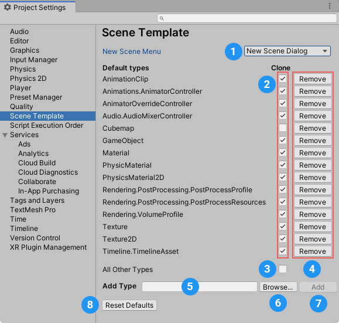

To access the scene template Project settings, open the Project Settings window (menu: Edit > Project Settings) and choose Scene Template from the category list.

The scene template Project settings panel
The New Scene settings (1) control what happens when you create a new scene from the File menu: (File > New Scene) or using the Ctrl/Cmd + n shortcut.
| Option: | 描述： | |
|---|---|---|
| New Scene menu | ||
| New Scene Dialog | Opens the New Scene dialog. | |
| Built-in Scene | Creates a new scene without opening the New Scene dialog. The new scene is a copy of the Project’s Basic template. | |
The Default Types settings control whether Unity clones specific types of asset by default when it creates a new scene from a scene template.
To make Unity clone a specific type of asset by default, enable the Clone option (2) for that asset type in the list.
To make Unity reference a specific type of asset by default, disable the Clone option (2) for that asset type in the list.
To set the default clone/reference behavior for asset types that do not appear in the list, enable/disable the Clone option for All Other Types (3).
To remove an asset type from the list, click the Remove button (4).
To add an asset type to the list, do one of the following: - In the Add Type field (5), enter a specific asset type. - Click the Browse button (6) to open a search window where you can find and select a specific asset type.
Then click the Add button (7) to add the asset type to the list.
To revert to Unity’s default asset type list and settings, click the Reset Defaults button (8).